文字
背景
行間


SSH活動報告
佐倉サイエンス(ゾムツール)
佐倉サイエンスの授業は1年理数科40名を10名ずつの4班に分け、
班ごとに物理や化学、生物など、様々な分野に散らばり、毎週受講分野を変えていきます。
2年生から始まる課題研究に向けて、視野を広げることを目的としています。
写真は本日の数学分野の班の授業風景です。
ゾムツールを使って、正多面体などの立体図形だけでなく、
DNAやサッカーボールなど、身近な物のモデルづくりをしています。
ゾムツールとは、棒状のパーツと球状のパーツを組み合わせて立体物を構築する玩具のことです。
SSH通信No.5
SSH通信No.5を発行しました。
内容は(株)常磐植物化学研究所講座と、「東大・小石川植物園で樹木と向き合う」についてです。
ぜひご覧ください。
https://cms2.chiba-c.ed.jp/sakura-h/17872fd488f90b7aed8eec4572b51f71/SSH%E9%80%9A%E4%BF%A1
SSHコンソーシアム千葉徹底Fieldwork(伊豆大島)
参加生徒はSSHコンソーシアム千葉に参加している4名(理数科2年生1名、理数科3年生3名)です。
SSHコンソーシアム千葉とは、千葉大学と県内SSH校5校(船橋・長生・木更津・柏・佐倉)の
共同研究プログラムのことです。
1日目は2コースに分かれ、生物コースは樹海の散策や火山による植生の破壊からの回復過程の調査を行い、
地学コースは山を登りながら溶岩や火口の観察を行いました。
2日目は1日目のコースを交換して実習を行い、夜は調査の結果を班ごとにまとめ、発表会を行いました。
3日目は火山博物館の見学や地層切断面の観察をしました。


サイエンスツアー(1年内浦山県民の森野外実習)
参加したのは普通科3名、理数科39名です。
生徒は6つの班に分かれ、班長を中心にフィールドワークを行いました。
1日目は森林調査実習で、樹木の高さや直径の計測、樹種の確認、植生断面図の作成などを行いました。
夜は会議室で学習会を行い、各班の調査結果をまとめました。
2日目の往路は地学実習で地層の観察を行い、復路は生物実習で様々な葉っぱの観察をしました。
夜はこの日観察した植物約20種類の中から分類するテストも行われました。
最終日は千葉大学海洋バイオシステム研究センターへ向かい、
センター内の展示室の見学や、岩礁棲生物の観察を行いました。

学校説明会SSH体験授業コーナー2日目
ミニ実験教室にご参加の皆さま、ありがとうございました。
2日間行った実験は
① 水に沈んだ卵を浮かべるには？
② 液状化現象のモデル
③ 食塩水と水の境界で起きる光の屈折
④ 地震波と建物の共振
の4種類でした。
手法の紹介だけでなく、なぜその現象が起こるのか、中学生にも理論的に考えてもらいました。
理数科2年生の先輩たちと一緒に実験・考察していくことで、
科学への興味や関心を引き出すことができたのではないでしょうか。
中学生のみなさん、ぜひ来年から一緒に研究していきましょう。

 学校説明会SSH体験授業コーナー1日目
学校説明会SSH体験授業コーナー1日目
ミニ実験教室にご参加の皆さま、ありがとうございました。
想定よりも多くの人数が集まり、後方や廊下からの立ち見の方もいたので、
午前も午後も急遽、2回ずつ実験教室を行いました。
科学と社会問題の内容を絡めつつ、参加型の実験もあったので、
多くの中学生にSSHに興味を持っていただけたのではないでしょうか。
明日はさらに見学者が多くなることが予想されます。
人数によっては本日と同様に、午前・午後ともに、
説明会の放送終了後20分間隔で2回実験教室を行いますので、
空いている方の回にぜひご参加ください。

学校説明会SSH体験授業コーナー
8月23日(火)、8月24日(水)の学校説明会の放送終了後30分間で物理・化学・地学分野のミニ実験を4つ行います。
場所は第1多目的室で、ポスターやSSH資料が置いてあるブースも用意しています。
助っ人として本校生徒も数名参加します。写真はまさに今実験の準備をしている様子です。
中学生の皆さん、一緒に実験を楽しみませんか？
小石川植物園で樹木と向き合う
8月6日(土)に生徒19名が小石川植物園(東京大学大学院理学系研究科附属植物園)で植物の観察実習を行いました。ケンポナシ、スイフヨウ、ソテツ、シュロ、ヒマラヤスギなど、様々な植物の撮影・観察ができました。柴田記念館で植物標本や植物学文献に触れることもできました。
昼頃には東京大学本郷キャンパスに移動し、中央食堂で昼食をとりました。食堂にはアクリル板が設置され、感染症対策として消毒や黙食を行いました。食後は弥生キャンパスへ移動し、校舎等キャンパス内の見学をしました。
この日の歩数は約36,000歩でした。
 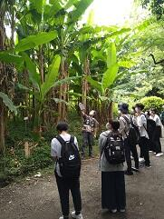
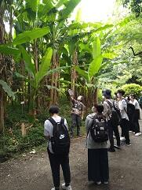 令和4年度SSH生徒研究発表会
SSH通信No.4
SSH通信No.4を発行しました。
内容はSSH講座「マイ分光器を作って光源の性質を調べよう」と算額の世界についてです。
ぜひご覧ください。
https://cms2.chiba-c.ed.jp/sakura-h/17872fd488f90b7aed8eec4572b51f71/SSH%E9%80%9A%E4%BF%A1
 SSH講座 ㈱常磐植物化学研究所講座
SSH講座 ㈱常磐植物化学研究所講座
7月28日(木)に1・2年生17名(普通科6名・理数科11名)が常磐植物化学研究所において、
植物の成分の精製実験、工場見学、ハーブ園見学を実施させていただきました。
カシスからアントシアニンを樹脂精製という方法を用い、分離・精製しました。
化学合成を用いないという企業理念に触れ、
実際に物理的な分離精製方法の一つを体験することができました。
 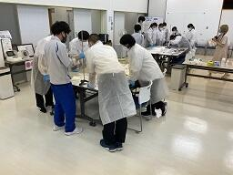
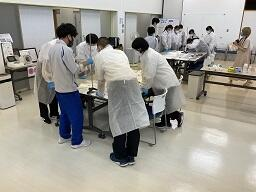

SSH講座「マイ分光器を作って光源の性質を調べよう」
慶應義塾大学名誉教授の佐々田博之先生をお招きして講義・実習をしていただきました。
対象は2年生の理数科40名です。
まず、波の性質や波長についての学習をして、その後回折格子シートと厚紙を使って分光器を製作しました。
自作した分光器を使って、白熱電球、LED、スペクトルランプ、太陽光など様々な光源のスペクトルを観測しました。


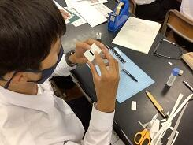

SSH通信No.3
SSH通信No.2
SSH通信No.2を発行しました。
内容はつくば市内研究施設訪問研修についてです。
ぜひご覧ください。
https://cms2.chiba-c.ed.jp/sakura-h/17872fd488f90b7aed8eec4572b51f71/SSH%E9%80%9A%E4%BF%A1
理数科課題研究口頭発表会
7月12日（火）に3年生理数科の課題研究の口頭発表会が行われました。
会場は佐倉高校地域交流施設の研修室です。
研究班は全部で23班あり、3限から7限の時間に発表しました。
1班あたりの持ち時間はスライド発表６分＋質疑応答３分＋交代作業２分の計11分です。
研究論文を書きながら発表スライドの作成やプレゼンの練習をするのは大変だったと思いますが、
どの班もこれまでの研究の成果を十分に伝えることができました。
聴衆は午前が2年生理数科、午後が1年生理数科でした。
質疑応答の時間には3年生だけでなく、1・2年生からも質問が多く飛び交いました。
1年生も2年生も個々の研究の参考にし、これからのイメージ作りができました。
研究テーマ等詳細は来週発行のＳＳＨ通信Ｎｏ．3に載せますのでご覧ください。
https://cms2.chiba-c.ed.jp/sakura-h/17872fd488f90b7aed8eec4572b51f71/SSH%E9%80%9A%E4%BF%A1
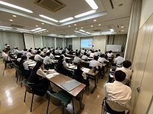
つくば市内研究施設訪問研修
午前は高エネルギー加速器研究機構を訪問し、光速に近いところまで電子を加速させエネルギーを取り出す実験施設や、宇宙誕生の謎を解明するための実験施設の見学を行いました。また、参加生徒全員で協力して空から降ってきている素粒子の通り道を観測やデータの集計も行いました。
物理・化学コースの生徒は物質・材料研究機構を訪問し、様々な新素材を見せてもらい、銀やチタン、タングステンなどの１０種類の金属を、生徒たちの知識と感覚を頼りに判別しました。
ＳＳＨ通信のNo.2にも今回の内容を載せますので、詳しくはそちらをご覧ください。
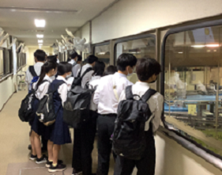

算額の世界
算額とは、江戸時代頃の和算の問題を記し奉納された額のことです。
普段は成田山霊光館に保管されていますが、現在は期間限定で成田山新勝寺の平和の大塔1階に展示されています。
算額には問題が昔の言葉で書いてあるため、解いていくにはまずは現代語訳しなければならず、歴史的背景も調べていく必要もあるので、様々な分野の知識が問われます。
今回参加したメンバーは総合的な探究の時間を利用して、算額についての研究を1年間行っていく予定です。
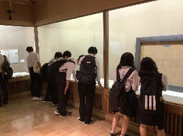

 令和３年度千葉県高等学校課題研究発表会が行われました。
令和３年度千葉県高等学校課題研究発表会が行われました。
ＳＳＨコンソーシアム千葉、千葉サイエンススクールネット事務局が主催し、県内ＳＳＨ指定校及び理数科設置校が、ビデオ会議ツール「Google Meet」を利用して、オンラインで発表参加しました。


 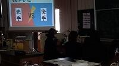
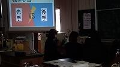

生徒にとって、他校の発表を視聴し刺激を受け、課題研究の活性化が図れたのではないでしょうか。
第１会場 物理
SSH講座「宇宙に生命の起源を探る」
令和4年2月8日㈫、NPO法人科学技術振興のための教育改革支援計画から横浜国立大学名誉教授 小林憲正先生をお招きして、ＳＳＨ講座が開催され、理数科２年生が参加しました。講座では、「宇宙に生命の起源を探る」をテーマに宇宙生物学（アストロバイオロジー）の立場から「私たち（地球人）は、どのようにして誕生したのか？」、「地球以外にも生物はいるのか？」、「私たちは、この先どうなるのか？」について考えました。その中で、地球における生命の起源の解明をアミノ酸のような生体分子がどのようにして誕生したかを探る方法やさまざまな模擬実験や隕石の分析から得られているアミノ酸の生成に関する知見も学びました。また、分子模型でアミノ酸の鏡像異性体（エナンチオマー）の関係や円偏光板によるコガネムシの翅の観察をしました。


ＳＳＨ講座「高エネルギーで探る宇宙の神秘」施設見学
1月６日（木）にＳＳＨ講座「高エネルギーで探る宇宙の神秘」のつくば市内研究施設見学が実施されました。物質・材料研究機構では、ここで開発された世界最先端の技術が私達の生活を支えていることを初めて知り、その驚きから生徒達は研究・事業内容に強い興味を示していました。高エネルギー加速器研究機構では、まず大規模な施設に圧倒されました。現役研究者に案内をしてもらいながら設備や研究内容について説明を受け、見えないものを探る熱意をはじめ、そのための創意工夫や研究者としての気概に大いに感銘を受けました。最後に訪れたＪＡＸＡでは、「きぼう」「はやぶさ２」の実物大モデルに心躍らせ、宇宙開発に夢や期待を膨らませる生徒の姿が輝いて見えました。
当日は思わぬ雪模様となりましたが、研究施設の皆様のお陰で生徒達もとても充実した時間を過ごせました。とても寒い日でしたが、未来の科学者を育てようという気持ちをなお一層温かく感じた日となりました。
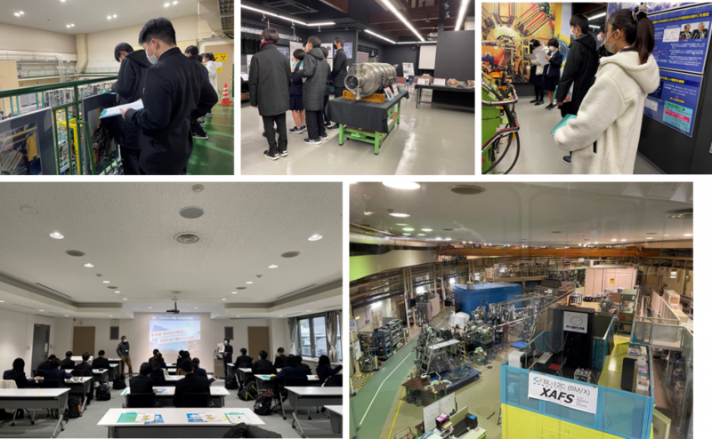